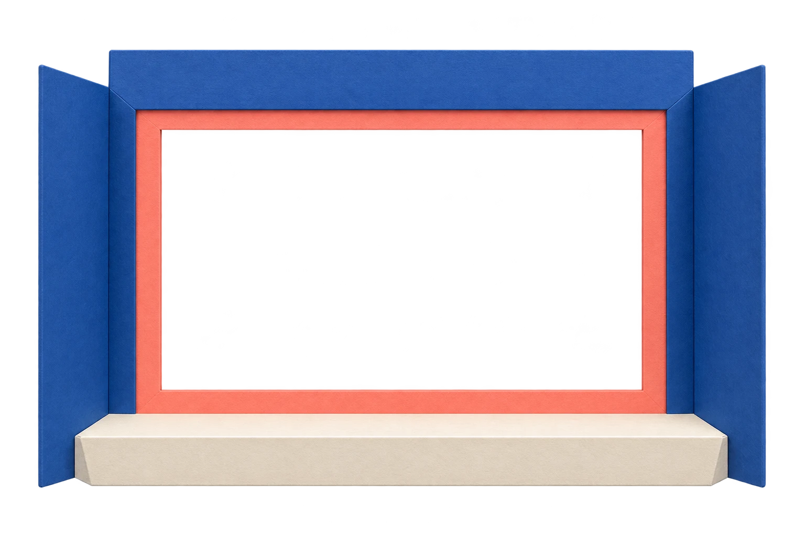

Choices move the story. Replay Demo repeats preparation and keeps your current passage.
Every turn,
a different tale.
A small paper theater for stories that listen. Open a fictional sample, follow a choice, and see where it leads.
7connected scenes
prepared in this story
prepared in this story

Connected scenes · filled tile marks your current passage